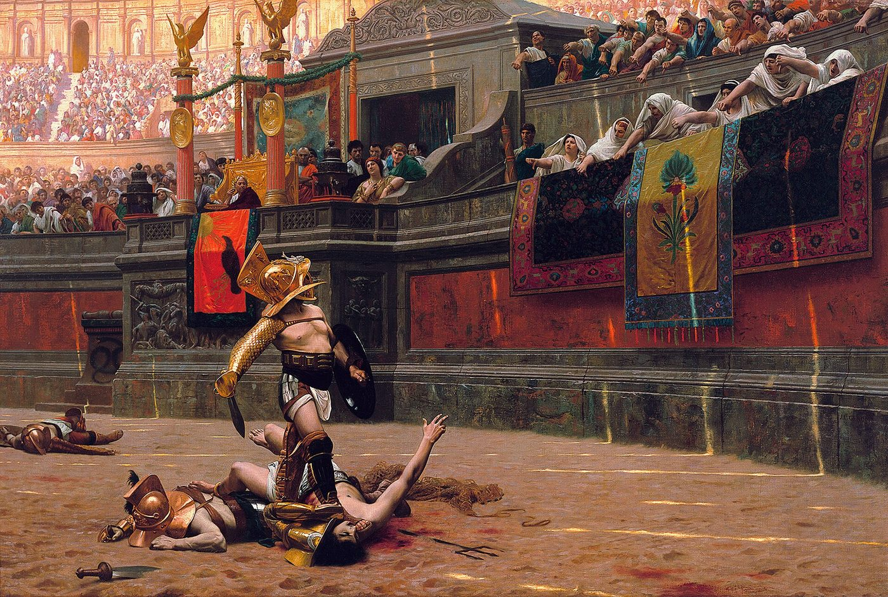

スパイラルダイナミクス › 3 / 10
赤の段階
侮られた記憶が、いつまでも胸から離れない。スパイラルダイナミクスの赤について、ベックとコーワンの著書、グレイヴスの段階観、ウィキペディアの下剋上の記述を引き、力と支配が生まれる条件、橙・青との違い、任侠との重なり、移行の壁を整理します。

侮られたことが、いつまでも胸から離れない。欲しいものを譲れず、先に力を見せた者が勝つように感じる。スパイラルダイナミクスで「赤」と呼ばれる段階は、そうした切迫した感覚を、ある生活条件のもとで生まれる生き延び方として捉えます。
赤は、遠い時代の支配者や映画の暴君だけにあるものではありません。この理論は、力が必要になる環境、その力が人を壊していく場面、そして秩序へ向かう転換までを、一続きの地図として描いています。
スパイラルダイナミクスの赤とは何か
力が正しさを決める
赤の核にあるのは、自己中心性、支配への欲求、そして力への飢えです。世界は被害者と捕食者に分かれ、どちらかを選ぶなら捕食者の側に立つほかない、という前提で動くとされます。追う、噛む、だます、利用することも、生き延びるための手段として現れます。
欲しいものは先延ばしにせず、すぐ満たす。罪悪感や他者への配慮は、まだ十分に育っていない段階として説明されます。人の心を動かしている仕組みは、何千年もかけて更新されてきたものであり、どの場所でも同じではない、という見方です。
赤が生まれる条件
赤の前には、部族的な結びつきを中心にした紫の段階があるとされます。部族が増え、土地や資源をめぐる争いが激しくなると、決断できない首長を持つ集団は、より強い首長の集団に飲み込まれかねません。
そこで弱い首長を倒し、自らが強い中心となって集団をまとめることが求められる。いがみ合う部族を、容赦ない支配によってひとつにすることが、赤の統治の形として語られます。
機能する裁判所や公正な警察がなく、人権や道徳の考え方も十分に根づいていない環境では、思いやりは切実な生存より後ろに置かれます。自分の子どもに危害が迫ったとき、優しさをいったん脇に置いてでも守ろうとする心の動きは、赤を理解する入口のひとつになります。
赤が重んじる強さと支配
赤が大事にするもの
この段階で価値を持つとされるのは、個人の力、腕力、強さ、タフさの誇示、大胆さ、勇気、英雄的な行いです。ボスであること、一番であること、勝つこと。敵を征服し、支配し、征服の快感を味わうことが並びます。
死を恐れず、死を美化する戦士の心、競争、尊敬、ボスへの忠誠、決断、行動、率直さも挙げられます。深く考えるより先に動き、結果は後から何とかする。巨大な像を建てる皇帝のような派手な誇示、地位と評判、自慢、威嚇、操作、搾取、規則破りや抜け穴探しも、この段階の表れとして説明されます。
赤は、思いやりと分かち合いを重視する緑と対照的な位置に置かれます。先のことを見通す余裕がない環境では、五年後や十年後より、今週を生き延びることが優先されるためです。問題の原因は警察、政府、相手といった外側に見えやすく、自分の内側を振り返ることは後回しになる、とされています。
赤はどこに現れるのか
挙げられる例
軍閥、独裁者、マフィア、海賊、ギャング、暴力的な囚人と刑務所の文化、テロリスト、詐欺師、非行少年。古代ローマの剣闘士の見世物と一部の皇帝、スパルタ、アレクサンドロス大王、アキレウス、モンゴルの騎馬軍団、ヴァイキング。映画やドラマに登場する犯罪組織の首領や暴君、カルトの教祖も例として並べられます。
人身売買、残酷な公開処刑、麻薬カルテル、銃乱射事件の犯人、ドメスティック・バイオレンス、格闘技の一部の選手とそれに熱狂する客も、この段階を説明する際に触れられることがあります。
日本では暴力団が例に置かれ、侍については「侍の掟は青の要素も深いので、侍は赤と青のあいだにいる」という位置づけが紹介されます。
特定の国、地域、政治家を赤の典型として扱う見立てもありますが、それは紹介する側の解釈です。理論では、赤は人種や民族や宗教の性質ではないとされています。抑圧された歴史のなかで育った形であっても、条件が変われば変化しうるものです。宗教にも赤の形だけでなく、青、橙、緑、さらにその先の形があると説明されます。
数字
ベックとコーワンの本にある数字として、世界の成人の約20パーセントが赤で、世界への影響力の5パーセントを持つ、と紹介されることがあります。統治の形としては、軍閥の率いる氏族、独裁、絶対王政、全体主義が挙げられます。
赤は不確実さと危機の時代に、ふたたび勢いを増すともされます。大災害で秩序が崩れた局面では、集団同士の殺し合いを防ぐため、しばらく強い支配が続くほうがましだという見方もあります。
自分の中の赤を見分ける視点
赤を自分とは無関係なものとして眺めるだけでは、この理論の意図はつかみにくくなります。赤とほかの段階を混同しないこと、反応の引き金を知ること、そして強さの健全な側面を見落とさないことが、ここでの整理になります。
1．橙と赤を混同しない
橙は市場で人を操って金を得るのに対し、赤は気に障れば相手を殴る、と区別されます。緑の人が大企業の経営者を「サイコパスの資本家」と呼び、赤だと見ることがあるものの、それは違うとされています。
橙は罪悪感や恥を感じ、概ね規則に従い、暴力を避け、計画を立て、待つことができ、原則として民主主義を支持する。赤にはそれが難しいとされます。ホワイトカラーの犯罪と、暴力犯罪を区別することが、この違いを考える際の軸になります。赤は人を傷つけることを楽しむ段階として説明されています。
2．赤を動かす引き金
赤が反応しやすいものとして、弱さ、柔らかさ、感情的なもろさが挙げられます。侮辱、嘲笑、不忠、裏切り、ボスの権威への挑戦、勝負に負けることも引き金になります。行動しないこと、優柔不断、言い訳、分析しすぎること、自分の力への疑いも同様です。
フェミニズム、社会正義、性的少数者の権利、民主主義といった緑の価値も、赤には柔らかいものとして映るとされます。赤が尊敬するのは、むき出しの物理的な力だけだ、という説明です。
怒ると物を投げる。侮られた記憶を何年も抱え続ける。相手を敵としか見られない。責められたとき、内省より反撃が先に出る。人を傷つけても罪悪感が動かない。こうした状態は、赤の芯が残っているしるしとして挙げられています。
3．赤には健全な面がある
赤には、速く決断すること、被害者にならないこと、無力さに沈まず動くことといった面もあります。大きないじめっ子から身を守るには別の強さが要る、という文脈で、「いじめる者に立ち向かう」ことや気高い戦士の精神も挙げられます。
迷信や宗教的な狂信にはまらない実際的さ、創造性、独立心、人にたからない姿勢も、健全な側面として説明されます。被害者を演じることが多い人や優柔不断な人については、自分の中の赤を少し育てることで楽になることがある、とされています。考えすぎず、腹から動くという方向です。
赤から青へ移るときの壁
赤が行き詰まるのは、暴力が次の暴力を呼ぶためです。こちらが相手に暴力をふるい、相手がこちらに返し、さらにこちらが返す。家族や共同体はその繰り返しのなかで引き裂かれます。
力で支配する者も、いつか倒されます。後継ぎは選挙ではなく縁故で決まり、無能になり、内側から崩れていく。安定した社会は、力では作れないという認識が、規律と道徳を持つ青への移行の出発点とされます。
青へ移るために言われていること
赤を抜けるきっかけとして、死にかける、刑務所に入る、薬で倒れるといった出来事が挙げられます。そこで人生の混沌に気づき、規律と秩序が必要だと知る、という道筋です。
- 自分より高いものを見つける — 神、目的、原則、理想。本物の真理でなくてもいい、何かの真理。教会、結婚、子どもの誕生がそれになることもある
- 罪悪感、恥、後悔を育てる — 自分の行いで誰かが泣いている、子どもがそれを見ている、と気づくこと。その気づきが自分を振り返らせる
- 環境を変える — 友人が全員、薬の常用者なら、友人を変える。街を、州を、国を変える。これは非常に大きい要素とされています
- 規律を身につける — 軍隊、厳しい寄宿学校、宗教的な共同体、ストア哲学。粗いが、効くことがある
- 教育 — 本を読む、大学に行く。軍隊をその足がかりにする人もいる
- 支え合いの集まり — 断酒会のような場、地域の教会。暴力的でないやり方で人と関わる場所で、青の価値がにじんでくる
年齢による変化も、この道筋の一部として語られます。10代、20代の赤が、40代、50代になるにつれ、疲れ、落ち着きを求めるようになる。路上で薬をやることや殴り合いから離れ、家族、まともな仕事、日曜に行ける教会を望むようになる、という描写です。虐待や貧困のなかで10代と20代を赤で生き延びた人が、それを使い果たす、ある程度の成功を得る、環境を出るといった局面で、青が始まるとされています。
赤と下剋上、任侠の重なり
弱い首長を倒して自らが強くなるという赤の生まれ方には、日本語では下剋上が重なります。下位の者が上位の者を政治的、軍事的に打倒して権力を奪うことを指し、室町から戦国の風潮を象徴する言葉とされます。
守護が守護代に、将軍が管領に実権を奪われた時代があり、斎藤道三の美濃の国盗りや、織田信長による主君と将軍の追放が典型として挙げられます。信長自身も最後は下剋上で討たれた、とウィキペディアは書いています。
一方で、近年の研究では別の読み方も示されます。家臣が主君を倒した例の多くは、家臣自身が後を継ぐのではなく、主君の一族を新たな主君に立てている。主君は絶対の存在ではなく、家臣団の合議を無視した主君を「押込め」る慣行が中世からあった、という見方です。
この見方に立つと、戦国の日本はむき出しの赤だけではなく、赤と、家臣団の合議という青の要素が混ざった形として見えてきます。それは「侍は赤と青のあいだ」という位置づけとも近いものです。
赤の健全な面である「いじめる者に立ち向かう」ことや「気高い戦士の精神」には、任侠という言葉も重なります。仁義を重んじ、弱きを助け強きを挫くために体を張る自己犠牲の精神であり、法の権威が及ばない場所で圧政や無法者から庶民を守る側面を持っていたとされます。
江戸以降、日本では法治が隅々まで行き届いたため、この精神は「社会の最下層や非合法の者のあいだでしか存在できない」状態になった、と説明されています。赤が機能する警察のない場所で生まれるという説明と、任侠が法の及ばない場所で意味を持つという説明は、同じ条件に触れています。
この理論で、段階は人の格ではありません。グレイヴスは段階を、その人が置かれた生活の条件への答え方として見ました。赤は良くも悪くもなく、良い悪いは、見る側がどこにいるかから見た相対的なものです。周りの人に「あの人は赤だ」と色を貼ることは、この地図の使い方ではありません。赤を裁き、悪魔化しているなら、まだ赤を理解していないのであって、こちらの側にやる作業が残っています。
一方で、赤の説明には、殴る、物を投げる、脅す、という行為が出てきます。もし、誰かの怒りがいま、あなたや子どもの安全を脅かしているなら、理論よりも先に、DV相談ナビ「#8008」か、緊急のときは警察「110」に電話してください。相手がどの段階にいるかを考えるのは、安全な場所に移ってからで間に合います。
出典・参考
- Actualized.org, Spiral Dynamics - Stage Red（YouTube）赤の価値、生まれる条件、現れる場所、橙との違い、引き金、不健全な面と健全な面、青へ移るための手順。引用は自動生成の字幕による
- Spiral Dynamics（英語版ウィキペディア）段階は生活の条件への答えであり、それ自体として良くも悪くもないという説明
- 下剋上（ウィキペディア）戦国時代の下位の者による権力の奪取と、「主君押込め」という読み直し
- 任侠（ウィキペディア）法の及ばない場所で弱きを助ける自己犠牲の精神、日本での位置